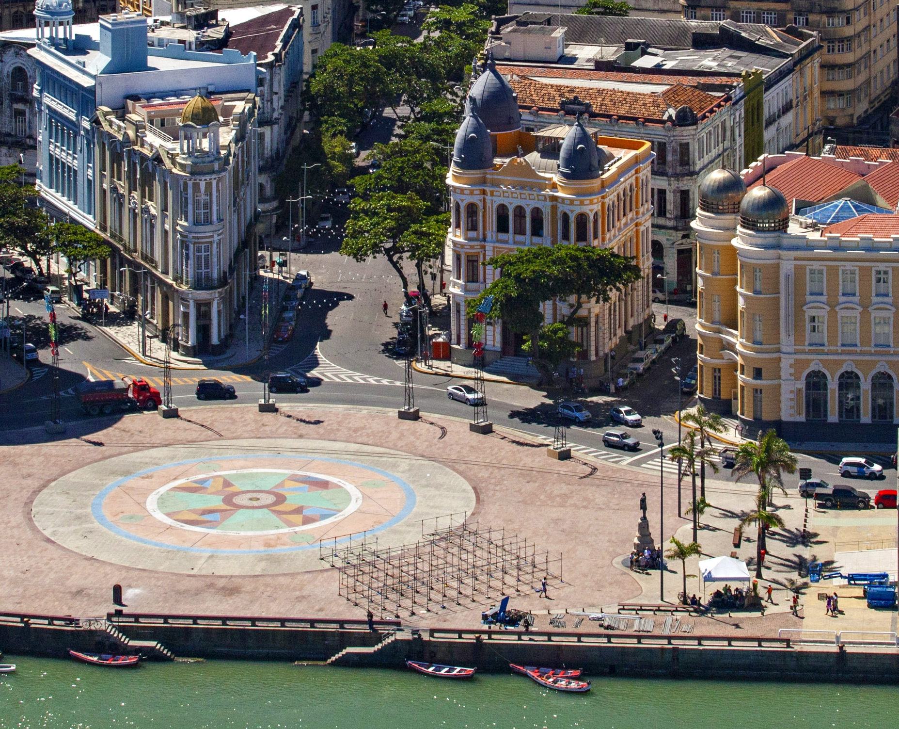
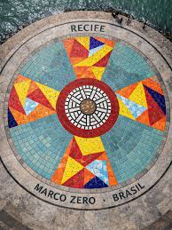

O Coração do Recife Antigo

O Marco Zero é um dos pontos turísticos mais emblemáticos do Nordeste. Localizado no Bairro do Recife, ele é cercado por prédios históricos e pelo Oceano Atlântico. Um dos seus maiores tesouros é a Rosa dos Ventos, uma obra de arte gigante pintada no chão pelo artista Cícero Dias.
